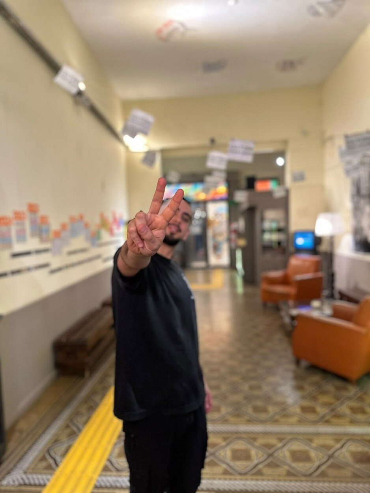

Relatos de la escena cordobesa a contraluz
En una charla distendida en el Centro Cultural Graciela Carena, entre mates que iban y venían, el iluminador, diseñador escénico y productor cultural Agustín Sánchez Labrador repasó cómo pasó del cine al teatro y de la escena a la luz. También habló del oficio de resolver con lo que hay en la escena independiente y de Yegua, el encuentro cultural que celebra el Día de la Lealtad peronista cada 17 de octubre.

Agustín Sánchez Labrador es iluminador, diseñador escénico y productor cultural. Se formó en Teatro en la Universidad Nacional de Córdoba (UNC) y desde 2022 trabaja en el Carena, donde es técnico de sala, opera espectáculos de teatro y música y forma parte de la coordinación del equipo de cultura. Pero cuando le toca presentarse, elige otra palabra: se define como “teatrero”. “Hacemos un poquito de producción, un poquito de dirección, un poquito de escenografía. Pero en lo que más me especializo es en la iluminación”, explica Agustín.
La charla se hizo el jueves 22 de octubre en el propio Carena, con mates de por medio y en un clima informal y descontracturado. Cinco días antes, el 17 de octubre, había estado detrás de Yegua, un encuentro cultural para celebrar el Día de la Lealtad peronista. Dos días después, el sábado 24, operaría en la misma sala la iluminación del show inmersivo de Sur Oculto, el mítico power trio instrumental de Córdoba capital.
Del cine al teatro
“Siempre amé el cine y las películas. Era lo que más me gustaba en la vida”, recuerda Sánchez Labrador. Nunca dudó de que estudiaría cine, hasta que en el último año del secundario tuvo teatro y se enamoró. El iluminador cuenta que algo dentro de su cuerpo le dijo “teatro, teatro, teatro” y que el cine le parecía muy técnico.
En la carrera de Teatro, los dos primeros años son de formación básica y en el tercero se elige la orientación. Ahí descubrió que prefería el detrás de escena. Él explica que le gustan el orden y el control, y que desde ese lugar se tiene “cierto control sobre la emoción de los espectadores, mucho más de lo que puedas tener sobre la escena”.
Consultado por algún espectáculo que lo haya marcado, él menciona La cebolla pagana y Las Monchas, dos obras que hizo con un grupo de amigas en el Carena y otros espacios. Trabajaban con lugares no convencionales, como el patio del centro cultural, y los actores aparecían por distintos sectores. Sobre lo que disfrutaba de esas experiencias, Sánchez Labrador señala: “Me gustaba estar corriendo detrás de la escena más que estar sentado operando, leyendo el guion. Me gustaba el resolver”. “El riesgo”, agrega. “Después lo paso mal, pero en el medio me gusta”, admite.
Dos escuelas
A la formación en la UNC se sumó el trabajo con Daniel Collante, iluminador y amigo de la familia. Con él se fogueó en obras más comerciales, a las que Agustín describe como obras “de sillón y potus”. Él reconoce que, si bien no son obras de su estilo en lo personal, le dieron cancha en el oficio de la escena y en el arte de resolver.
Aquella experiencia también le enseñó a trabajar con personas que quizás no habría elegido de no ser a través de esos proyectos, más comerciales y diferentes a su búsqueda personal como artista. Él sostiene que en la universidad se termina siendo un poco endogámico y que trabajar en cultura es trabajar con amigos, “que es lo más importante y lo más hermoso de todo”, pero también con gente que no puede ser tu amiga, con quien hay un vínculo profesional propiamente dicho.
También cuenta que en los dos últimos años de la carrera trabajó en Espacio Blick, donde hizo su tesis y aprendió muchísimo junto a Facundo Domínguez sobre el oficio de técnico de sala.
Iluminar con lo que hay
“Hay tantas formas de hacer iluminación como iluminadores”, afirma Sánchez Labrador. Sin embargo, distingue dos grandes caminos: ser iluminador de un grupo o proyecto, o ser iluminador de una sala. Él detalla que el técnico de sala cuida los equipos y hace posible que la idea del grupo funcione en ese espacio, mientras que el técnico de un grupo tiene más libertad creativa. Él hace las dos cosas. “Solo que en una tenés un sueldo fijo y en la otra estás en el mambo de la autogestión”, bromea.
Al preguntarle sobre los riesgos, o qué es lo que teme un iluminador, Agustín explica que es que algo falle, porque en Córdoba y en la Argentina, sobre todo en el teatro independiente, se trabaja desde el resolver. Nadie pide 50 luminarias de una marca y las encuentra en la sala. “De repente terminás con una luminaria que se cae a pedazos, una que está llena de tierra y otra que es la que vos llevaste en la mochila”, describe. Ese temor tiene que ver “más con el artefacto que con lo humano”.
El proceso de trabajo también cambia según el proyecto. El iluminador cuenta que con los grupos y las obras que le gustan trabaja desde el inicio de la creación, mientras que en otras se involucra al final, en los dos últimos ensayos, para llevar su estilo y su toque a la visibilidad y a la luz, y ver desde dónde apoyar esa propuesta. En esas obras más comerciales, aclara, lo importante es la visibilidad, y la luz “nada más apoya y hace que se vea”.
La música, otro registro
Iluminar recitales y bandas es algo que hace muchísimo en el Carena. Sin embargo, al consultarle cómo es operar bandas, Sánchez Labrador dice que le gusta más iluminar espectáculos performáticos o bandas con búsquedas estéticas que van más allá de lo sonoro. Las bandas y las fiestas, agrega, no son lo que más le interesa dentro de su búsqueda personal, aunque es algo que hace mucho en el espacio. Él aclara que en el Carena se presenta una gran diversidad de espectáculos, como bandas chicas, propuestas acústicas y de café concert, y que así sí lo disfruta.
Del patio al equipo de cultura
Llegó al Carena a principios de 2022 con Las Monchas del pasaje, una obra de Cafuné, una compañía teatral que ya se disolvió y que se presentó en el centro cultural. Allí conoció a Flor Besso, que es parte de la coordinación del Carena y empezó a convocarlo para hacer luces. “Yo soy medio metido. Nunca me gustó solamente venir y cumplir mi rol de iluminador”, confiesa Agustín. Así se fue haciendo un lugar hasta integrar la coordinación del equipo de cultura.
Hoy es técnico de sala, pero muchas veces también opera los espectáculos. Él atribuye esa doble tarea a la crisis social y cultural: las bandas y los proyectos ya no pueden tener su propio iluminador o sonidista. “Termino operando yo, a lo que voy considerando y voy sintiendo”, explica.
Un rol “hasta sanitario”
Para Agustín, los centros culturales cumplen hoy una función que excede lo artístico. “En estos contextos de crisis, los centros culturales tienen un rol hasta sanitario dentro de la sociedad”, sostiene Sánchez Labrador, y vincula esa función con la salud mental en una época en la que todo está mediado por pantallas.
Él destaca que estos espacios ofrecen una cotidianidad de la cultura, con talleres y actividades durante la semana, que permite salir y encontrarse con los demás. Las experiencias del Trincherazo y de Yegua le confirmaron una idea. “Lo que la gente quiere no es ir a escuchar al virtuoso pianista, sino encontrarse con otros”, asegura.
Yegua: festejar que estamos juntos
Agustín cuenta que Yegua, el encuentro cultural para celebrar el Día de la Lealtad peronista que se hizo el pasado 17 de octubre en el Centro Cultural Graciela Carena, tuvo un antecedente: el Trincherazo, un evento masivo que se realizó el año pasado. Fue en junio de 2025, en el mismo Carena, organizado por Futurock, con una charla y presentación de Julia Mengolini, feria, poesía y teatro.
Yegua, que él define como el cruce entre el trabajo cultural y el “espíritu militante peronista” del equipo, lo idearon junto a Araceli Genovesio y Paulina, de la librería Hojarasca. “Hacía falta que alguien diga las cosas como las pensamos y sin miedo a lo que pueda suceder”, afirma.
La convocatoria fue a las 20. Una hora antes, Sánchez Labrador admite que pensó que no iba a llegar nadie. Se llenó: vinieron cerca de 300 personas, en un espacio donde 150 ya llenan el auditorio, y la sala explotaba de gente que venía a encontrarse. Hubo feria, intervenciones teatrales y la música de Pablo Treinta, el DJ de Futurock.
“La gente no necesitaba saber a qué venía, sino que necesitaba encontrarse”, reflexiona Agustín, que cita una frase de Alejandro Dolina para describir al público que asistió: si les preguntan qué festejan, festejan que están juntos. Esa noche, la gente bailó feliz hasta las 2 de la mañana.
La fecha no fue casual. Él explica que el 17 de octubre recuerda al pueblo que salió de forma espontánea a la calle para pedir la liberación de su líder, y que había “algo de ocupar un espacio”. Además, asegura que Yegua debe ser el único evento del país que pone la cara de Cristina en un flyer “sin disimulo”. Este año sumaron la Feria Cuca, con productos que dialogan con la temática.

Lo que viene
Yegua seguirá el año próximo, y más sabiendo que habrá elecciones. Sánchez Labrador anticipa que va a ser “un octubre heavy” y que, desde lo militante, quiere seguir con la gráfica, porque se divierte imprimiendo. Hasta diciembre hace un reemplazo en el Elenco Municipal de Danza Teatro. Después, cuenta, quiere impulsar proyectos independientes junto a amigos y amigas de confianza con quienes suele hacer equipo: propuestas artísticas en las que la gente participe y que permitan montar una obra en tres meses.
Un contraluz
Para cerrar, Apagón Urbano le pidió que definiera su trabajo con un color de luz. “Muy difícil”, respondió Agustín, y dio vuelta la pregunta: más que un color, eligió una posición de luz, el contraluz. “Te muestra una silueta, pero no te muestra completamente la cara de eso que estás viendo”, describe. Él explica que esa luz tiene teatralidad y tensión, pero no da todo resuelto.
Así entiende su lugar en la cultura. “No somos comunicadores, somos artistas y trabajadores de la cultura”, concluye Sánchez Labrador. Por eso, salvo en Yegua, donde el mensaje fue directo, busca que el espectador reflexione, saque sus conclusiones y construya su propio relato. Que no esté todo servido.